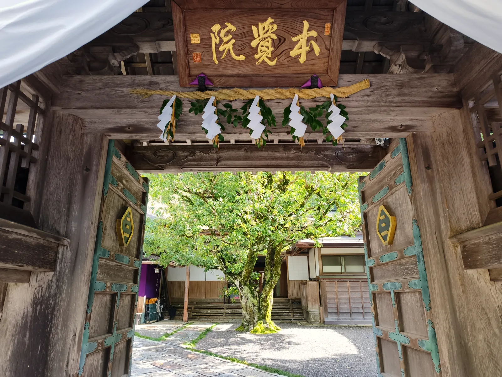
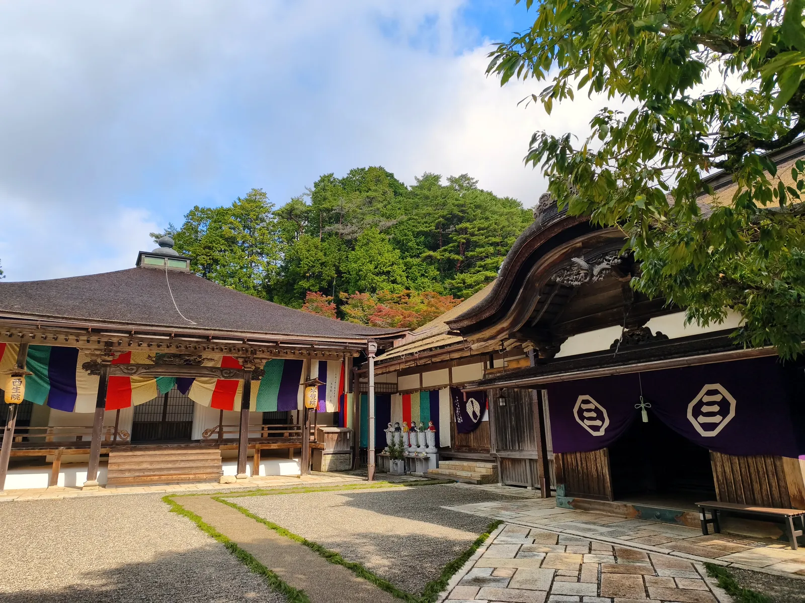
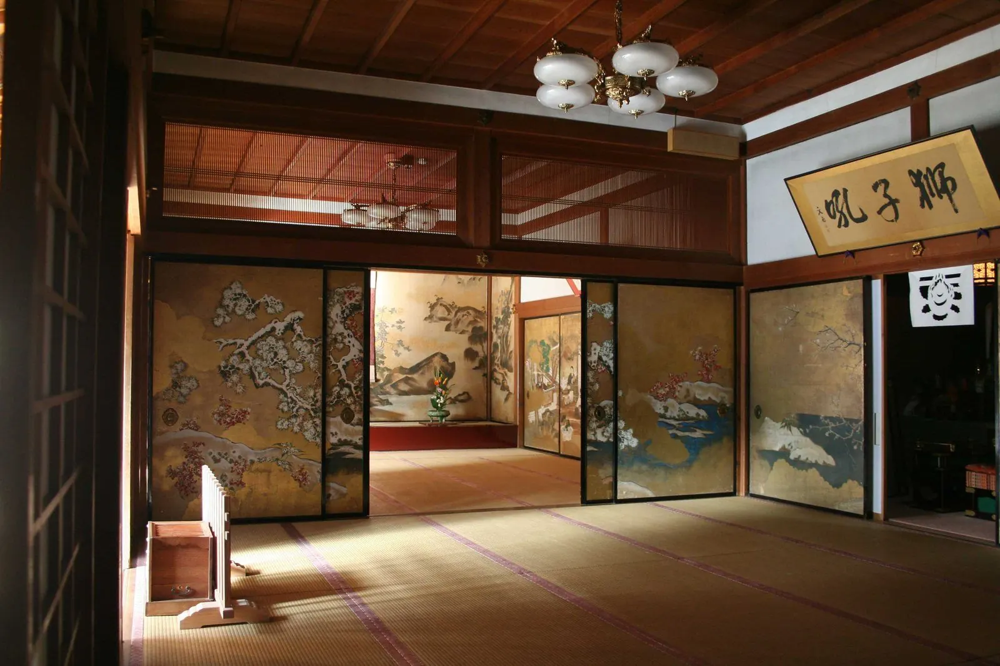
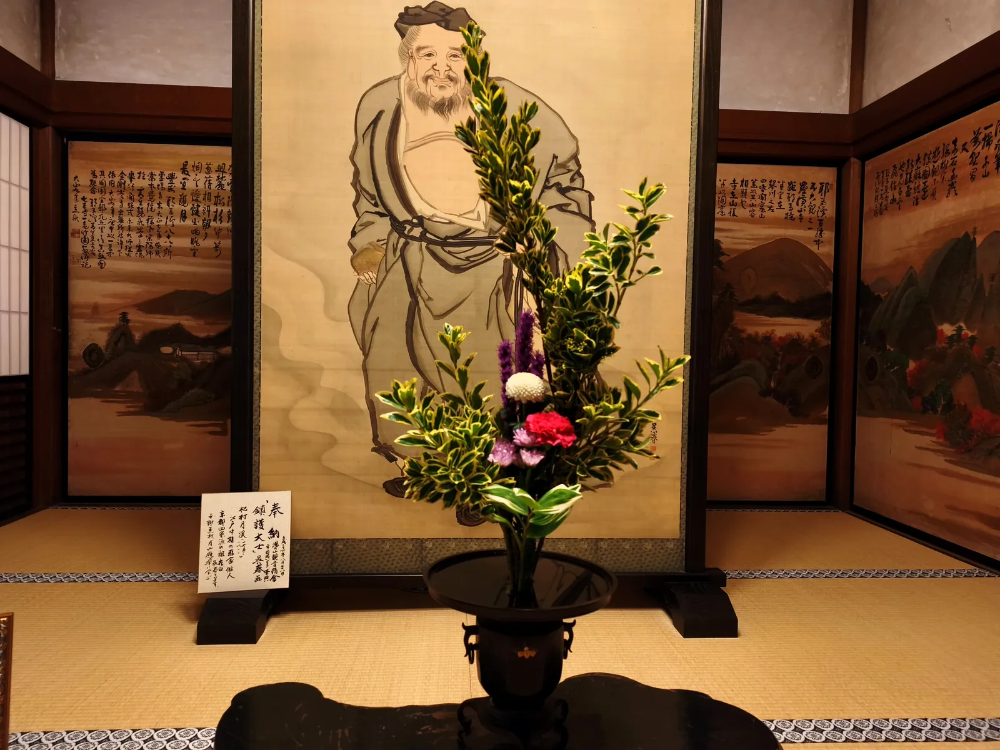
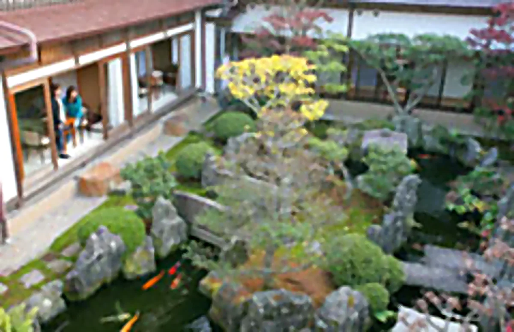
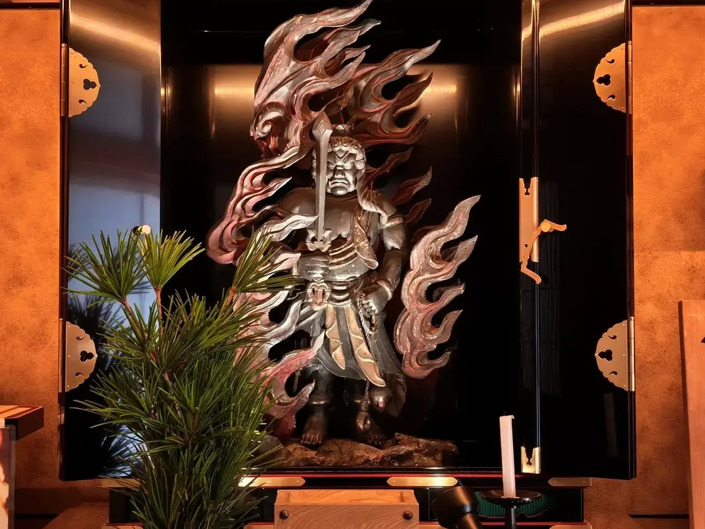

ご宿泊の方は、院内をゆっくりとご覧いただけます。山門から本堂、江戸の絵師たちの筆、そして昭和の作庭家の庭へ。泊まるからこそ出会える景色です。

山門バス通りから歩いて2〜3分。金文字の扁額としめ縄の下をくぐると、境内の大樹が迎えてくれます。

本堂高野山真言宗 総本山金剛峯寺の塔頭寺院、別格本山。智証大師作の不動明王像をご本尊としてお祀りしています。朝のお勤めもこちらで行います。
 本堂の天井絵江戸時代のものが色彩豊かに残る、貴重な天井絵です。一枚一枚すべてに趣向を凝らした絵のはめ込み板が、本覚院の本堂を特徴づけています。建立から250年を経た今も、豊かな彩色を留めております。
本堂の天井絵江戸時代のものが色彩豊かに残る、貴重な天井絵です。一枚一枚すべてに趣向を凝らした絵のはめ込み板が、本覚院の本堂を特徴づけています。建立から250年を経た今も、豊かな彩色を留めております。
 狩野派の襖絵江戸時代に当院に滞在していた、狩野派の絵師による貴重な襖絵です。狩野派は、室町時代から江戸時代にかけて幕府の御用絵師を務めた、日本美術史を代表する絵師の一派です。
狩野派の襖絵江戸時代に当院に滞在していた、狩野派の絵師による貴重な襖絵です。狩野派は、室町時代から江戸時代にかけて幕府の御用絵師を務めた、日本美術史を代表する絵師の一派です。

狩野派の襖絵の間江戸時代の狩野派の絵師による襖絵に囲まれた座敷です。仏前結婚式のあとの宴席にも使われます。夕暮れの陽光がうむ陰影と、たおやかな時間の流れをお楽しみください。

鎮護大士（呉春 画）江戸中期の画家・俳人で、京都・四条派の祖として知られる呉春が描いた、鎮護大士の図です。
 大広間（2階）2階の大広間では、団体でのご宿泊のお食事や、仏前結婚式の宴席をご用意いたします。たくさんのお膳が並ぶ光景は、宿坊ならではです。
大広間（2階）2階の大広間では、団体でのご宿泊のお食事や、仏前結婚式の宴席をご用意いたします。たくさんのお膳が並ぶ光景は、宿坊ならではです。

池泉庭本覚院の5つの庭園のひとつ。作庭の形式美が各所に息づき、四季折々の風情が楽しめます。静寂のなかに流れる水の音、鳥や虫の声に心が癒されます。

修身不動明王大日如来の化身とされ、右手の剣で迷いを断ち切り、左手の羂索（けんさく）で、どんな人も取りこぼさず救い上げるといわれます。
 ぬくぬくのお地蔵さま毛糸の帽子にマフラー、花柄のケープ。寒い季節には、お地蔵さまたちもあたたかな装いでお迎えします。
ぬくぬくのお地蔵さま毛糸の帽子にマフラー、花柄のケープ。寒い季節には、お地蔵さまたちもあたたかな装いでお迎えします。
 おいべっさん商売繁昌・五穀豊穣の福の神。にこにこのえびす顔を正面から拝めるよう、人と同じ目の高さにお祀りしています。
おいべっさん商売繁昌・五穀豊穣の福の神。にこにこのえびす顔を正面から拝めるよう、人と同じ目の高さにお祀りしています。
 だっこ地蔵さん座布団ごと抱え上げ、願いごとをしてもう一度。最初より軽く感じたら、願いが叶うと伝えられています。
だっこ地蔵さん座布団ごと抱え上げ、願いごとをしてもう一度。最初より軽く感じたら、願いが叶うと伝えられています。
 重森三玲の石庭と茶室苔の石庭は、東福寺方丈庭園などで知られる昭和の作庭家・重森三玲（1896〜1975）によるものです。回廊を巡りながら眺めると、石が左右に、さらには上下にも動くかのような錯覚を覚えるよう、複雑に配置されています。この庭を見下ろすように、離れの茶室が佇んでいます。
重森三玲の石庭と茶室苔の石庭は、東福寺方丈庭園などで知られる昭和の作庭家・重森三玲（1896〜1975）によるものです。回廊を巡りながら眺めると、石が左右に、さらには上下にも動くかのような錯覚を覚えるよう、複雑に配置されています。この庭を見下ろすように、離れの茶室が佇んでいます。